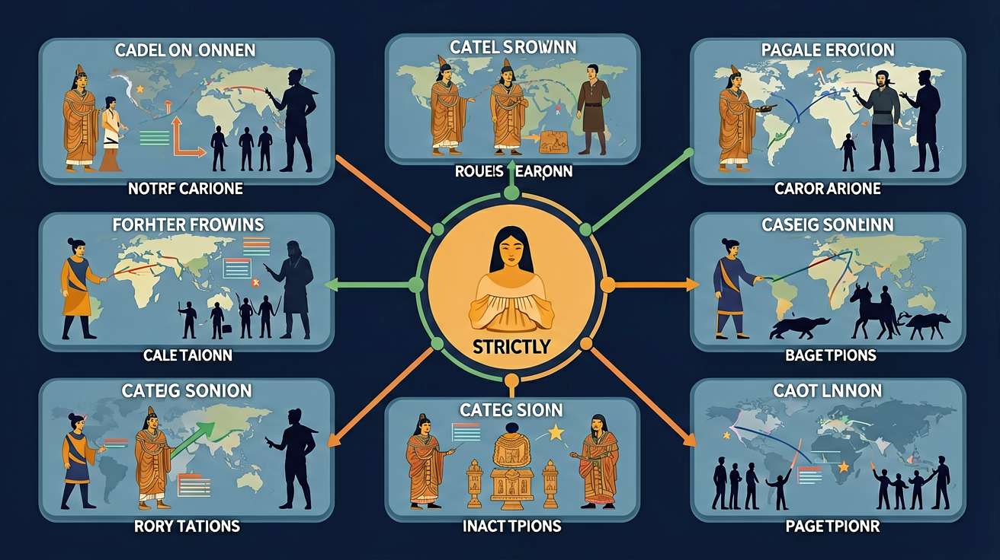

世界古代史课程内容包括区域文明的多元发展，使学生了解人类文明从分散到整体的历程。

🎯 能说出尼罗河对古埃及农业的影响
🎯 能判断楔形文字与象形文字的区别
🎯 能分析种姓制度对印度社会的影响
❓ 为什么金字塔要建在沙漠里？
❓ 汉谟拉比法典真的公平吗？
❓ 印度种姓制度现在还有吗？
学完这一课，这些问题你都能自信地回答。
古埃及人测量尼罗河水位用于？
楔形文字载体是？
古代亚非文明（古埃及/古巴比伦/古印度）是初中历史的重要内容。世界古代史课程内容包括区域文明的多元发展，使学生了解人类文明从分散到整体的历程。
通过了解古代主要文明区域，认识世界古代文明的多元特点，理解人类文明的共同价值。
点击时代/图层按钮切换地图；悬停边界，点击城市标记查看说明。
复制提示词到 AI 学伴，生成「古代亚非文明（古埃及/古巴比伦/古印度）」的时间轴或事件提纲；也可以上传你手绘的示意图，请 AI 学伴点评。
复制后可粘贴到 AI 学伴继续对话。
下列文明成果与地理特征匹配正确的是
根据四大文明古国的考古发现，完成特征对比表格
古埃及、古巴比伦、古印度等亚非文明发源于大河流域，创造了文字、法律、数学与宗教文化成就。认识它们要抓住自然环境与文明特征的关系，并理解人类文明的多元起源。
每个文明记一条代表性成就：如埃及金字塔与象形文字、古巴比伦《汉谟拉比法典》、古印度种姓与佛教起源等。
常见误区：常见误区是只用欧洲中心看世界，忽视亚非文明的开创性贡献。
亚非古代文明多发源于？
And：学生知道埃及有金字塔
But：但不懂为何只有尼罗河能孕育古埃及文明
Therefore：理解地理环境对文明的决定作用
古埃及文明被称为'尼罗河的赠礼'，因为这条每年7-10月定期泛滥的河流，不仅带来肥沃淤泥（洪水退后每平方米沉积2厘米厚淤泥），还形成天然灌溉系统。例如法老美尼斯在公元前3100年统一上下埃及后，组织修建的蓄水池工程可灌溉50万亩农田，这解释了为何埃及能养活百万人口并建造金字塔。
🌍 就像今天长江三角洲的稻田依赖长江水，古埃及人在尼罗河畔种植小麦和大麦。我们吃的面包最早就是古埃及人用尼罗河三角洲的小麦发明的，他们甚至用面粉当工资发给工人。
古埃及人称尼罗河泛滥季为'阿赫特'，主要是因为洪水带来了什么？
金字塔=法老陵墓+数学奇迹+奴隶血泪
汉谟拉比法典用'以眼还眼'维护阶级统治
埃及信阿蒙神，巴比伦拜马尔杜克，印度崇梵天
想象自己用芦苇笔在泥板上刻楔形文字
大河流域文明都靠治水发展出强大王权
先独立作答，再点选项查看对错与错因。
卢克索壁画中出现的书写材料最可能是
与壁画中象形文字破译直接相关的文物是
古埃及人测量尼罗河水位的主要目的是
古埃及人把尼罗河每年泛滥带来的肥沃泥土称为____
答案：黑色土地
与沙漠的'红色土地'相对，特指适合农耕的冲积平原
迄今发现最完整的古巴比伦法典刻在____材质的石柱上
答案：玄武岩
汉谟拉比法典原文刻于2.25米高的黑色玄武岩石柱
（中考题）《汉谟拉比法典》石柱上部浮雕反映？
若古印度医生治死婆罗门，根据法典应？
大河流域文明共同点不包括？
✅ 木乃伊裹百层布重达100公斤
💡 忽视防腐处理重量
✅ 实际有3000+亚种姓
💡 教材简化表述
口诀：埃及金字塔河边立，巴比伦法刻石柱，印度种姓分四等
类比：文明像大树，河流是根，城市是果